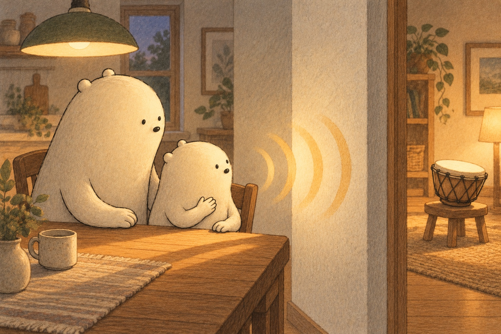
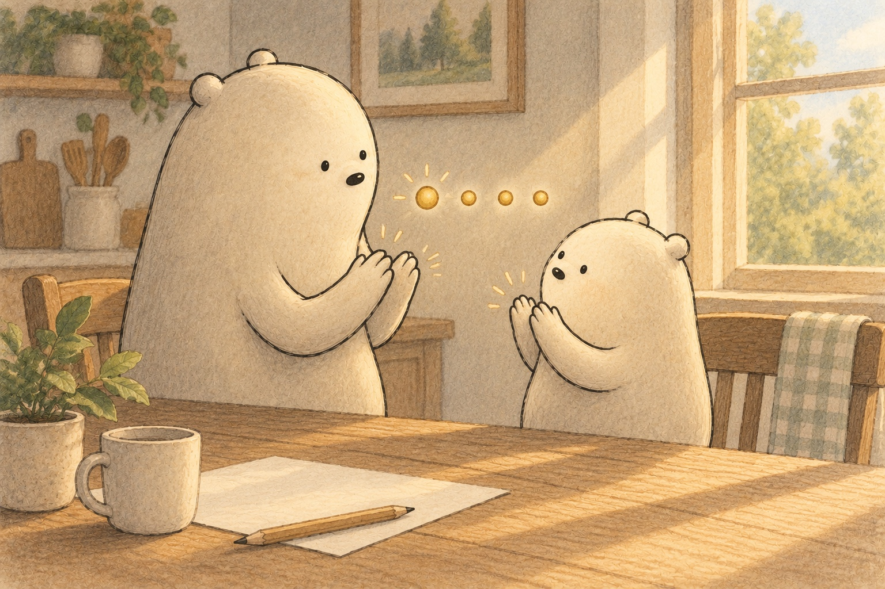
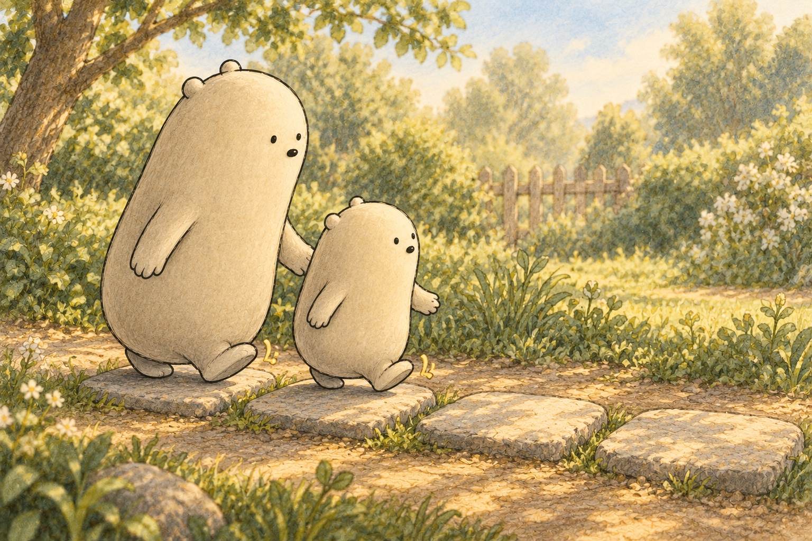

Count the rhythm you can feel
How Rhythm Is Math

Boom-tap-tap-tap came softly through the wall. Little Wonderer put a hand on their chest. A heartbeat was already making a steady-ish pattern. It was not a perfect clock, but it offered a gentle clue: rhythm begins when sounds or movements meet a pulse we can feel.

Big tapped the table evenly. Little counted, “One, two, three, four.” Each number landed on a steady tick. That steady pulse was the beat. The claps could change, but the beat kept giving them places in time. Count was the tool that helped both Wonderers stay together.

Musicians often gather beats into groups. In 4/4 time, one bar holds four beats. Little clapped ONE, two, three, four, making ONE a little louder. The stronger first beat pointed to the start of the group. Not every song uses four, but this group was easy to find again.
- beat
- the steady pulse underneath a rhythm
- rhythm
- a pattern of sounds and silences across a beat
- pattern
- an order that can be noticed or repeated
- count
- to name the beats in order
- group
- to gather beats so their order is easier to find
- bar
- one group of beats in music
- rest
- a counted place of silence
- repeat
- to do the pattern again
- steady
- continuing at an even pace
- loud
- making a stronger sound